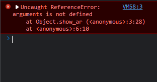

Differentiate arrow functions and regular functions
- The main Difference between Regular Function and Arrow Function is the change in syntax. Regular function can define with Function Keyword but arrow function define with arrow (=>)
- For Example
- Regular Function
function functionName(){ functionBody } - Arrow Function
const functionName = ()=>{ functionBody } - Another main difference is the Ability of arguments an Objects. Arguments objects are not available in arrow function but are available in regular functions.
- For Example
- Regular Function
let user = { show(){ console.log(arguments); } }; user.show(1, 2, 3);
- Arrow Function
let user = { show_ar : () => { console.log(...arguments); } }; user.show_ar(1, 2, 3); - Another main difference between Regular function and Arrow function is the invoke of Constructor. Arrow function cancot be use as Constructor
- For Example
- Regular Function
function Hair(color) { this.color = color; } const redHair = new Hair('red'); redHair instanceof Hair; // => true - Arrow Function
const Hair = (color) => { this.color = color; }; const redHair = new Hair('red'); // TypeError: Hair is not a constructor